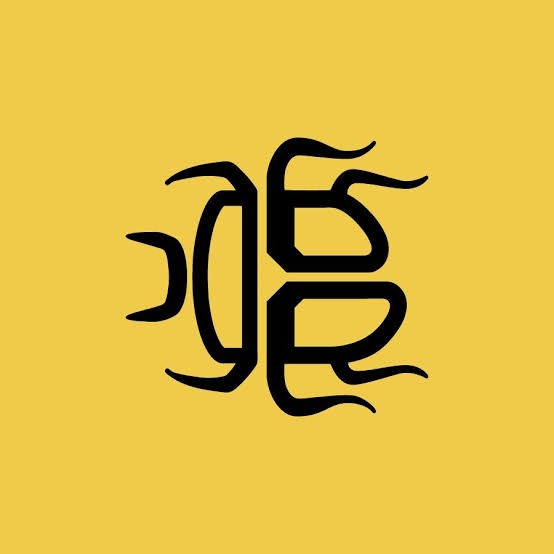
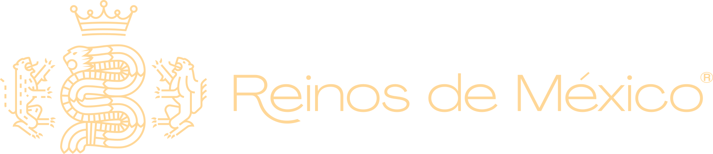

UNIVERSO aBANZA

⛶
Pantalla completa
01
Reino
De construir espacios a tejer comunidades.
Cargando…
↻
Volver a dibujar
Ⅱ
Ritmo
Ágil
Natural
Pausado
← → para explorar · Espacio para pausar
↓ Exportar PPTX